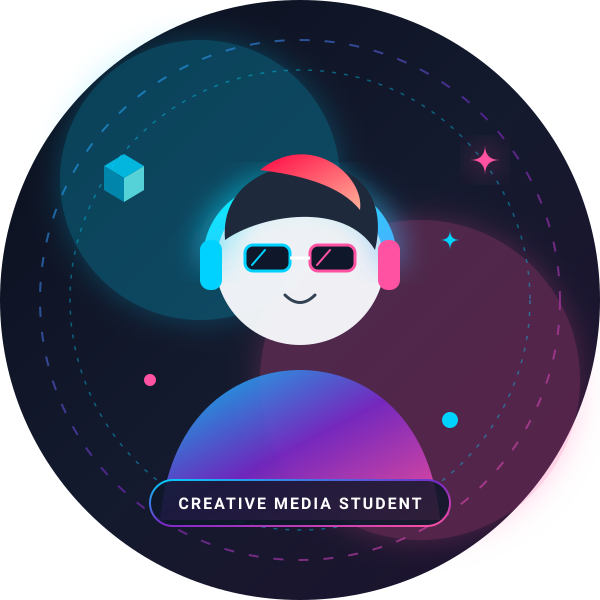
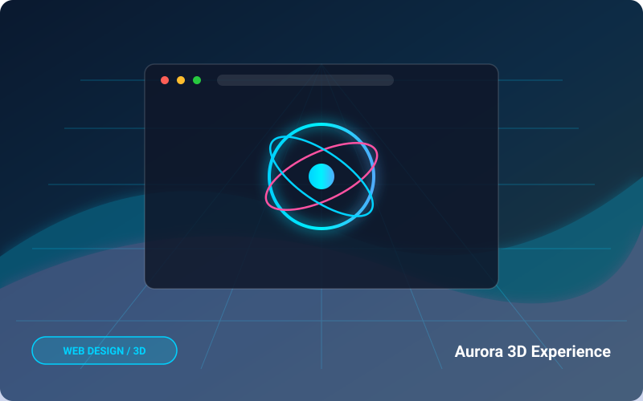
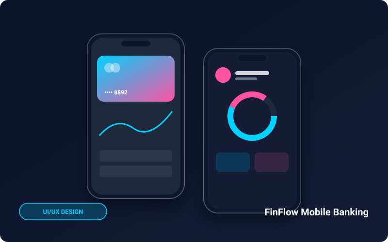
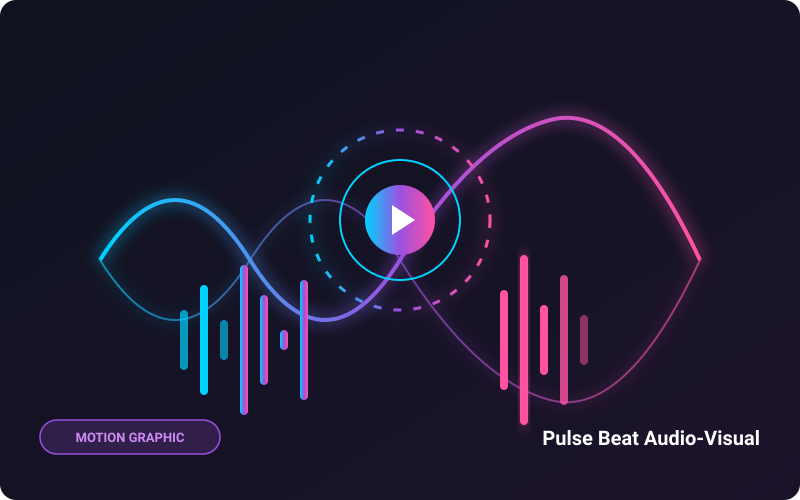

ผู้หลงใหลในการผสมผสาน ศาสตร์แห่งศิลปะดิจิทัล เข้ากับ เทคโนโลยีเว็บที่ทันสมัย มุ่งเน้นการสร้างสรรค์ประสบการณ์ทางสายตาที่มีชีวิตชีวา ผ่านการออกแบบ UI/UX, Motion Graphic และสื่ออินเทอร์แอคทีฟที่เข้าถึงใจผู้คน
Creative Skills
Featured Works
Passion & Craft

เลือกเมนูเพื่อเข้าสู่เนื้อหาฉบับเต็มของแต่ละส่วน ทั้งประวัติการศึกษา ทักษะ 10 ด้าน แฟ้มผลงาน และช่องทางติดต่อ
ประวัติย่อ ปรัชญาการทำงาน การศึกษาสาขาสื่อนฤมิต เกียรตินิยมอันดับ 1 และเป้าหมายในสายอาชีพ
10 ทักษะทั้ง Graphic, Photography, Video, Motion, UI/UX, Web, HTML, CSS, JS และ AI Tools
6 ชิ้นงานเด่นสื่อนฤมิต ทั้ง Web 3D, Cyber City Art, Motion Graphic, Banking App และ AI Film
พร้อมเริ่มงาน! ช่องทางอีเมล โซเชียลมีเดีย Facebook, IG, GitHub, Behance และแบบฟอร์มส่งข้อความ
ตัวอย่างผลงานที่ผสานความคิดสร้างสรรค์และเทคโนโลยีมัลติมีเดีย



โมชันกราฟิกแสดงผลคลื่นเสียง Sound-Reactive ในความละเอียด 4K
ดูผลงานใน Portfolio